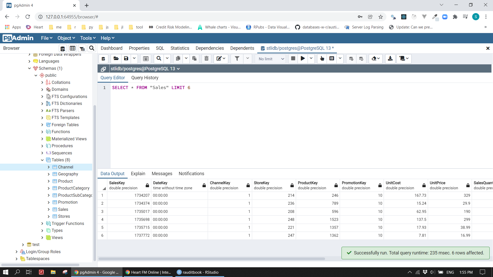
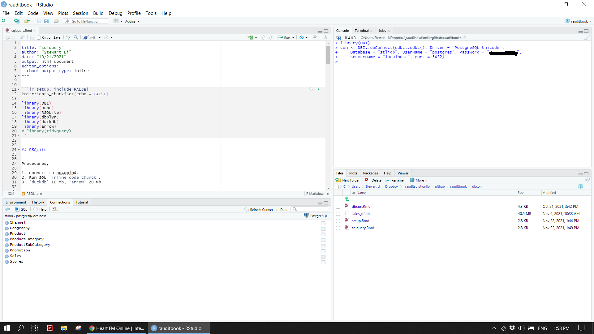
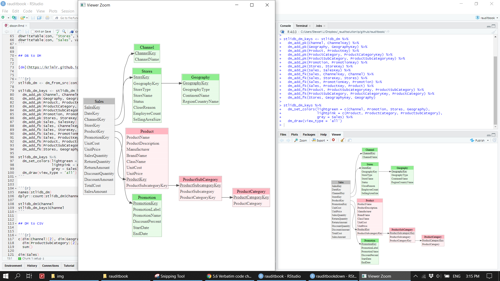
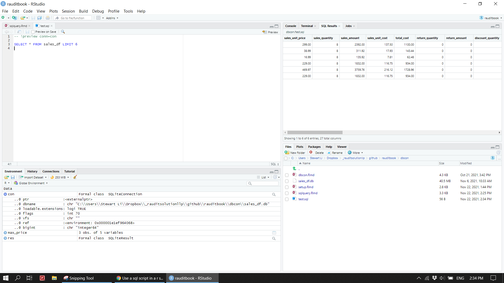

Chapter 4 Import
As data could be stored in a csv file, database, cloud, and others, R facilitates numerous ways of importing data. For data easily fitted in the memory, you usually read it directly into a dataframe through data.table. For slightly bigger data, RSQLite, duckdb and arrow can be very useful in term of performance. Pretend the data live in PostgreSQL database in this case.
4.1 Dataset
4.1.1 Data to database
This chapter uses sales data in Excel with multiple worksheets. To put them into a database named stlidb, we need to read Excel worksheets into R and then copy those objects to the database separately. The database now contains eight tables as shown Figure 1.
sheet_name <- readxl::excel_sheets(here::here("data", "ContosoData.xlsx"))[2:8]
df_list <- map(set_names(sheet_name), read_excel, path = here::here("data", "ContosoData.xlsx"))
list2env(df_list, envir = .GlobalEnv)Sales <- read_csv(here::here('data/SampleContosoSalesTable.csv'))con <- DBI::dbConnect(odbc::odbc(),
Driver = "PostgreSQL Unicode",
Database = "stlidb",
UserName = "postgres",
Password = "**********",
Servername = "localhost",
Port = 5432)
DBI::dbListTables(con)
DBI::dbDisconnect(con)DBI::dbWriteTable(con, "Channel", value = Channel)
DBI::dbWriteTable(con, "Geography", value = Geography)
DBI::dbWriteTable(con, "Product", value = Product)
DBI::dbWriteTable(con, "ProductCategory", value = ProductCategory)
DBI::dbWriteTable(con, "ProductSubCategory", value = ProductSubCategory)
DBI::dbWriteTable(con, "Promotion", value = Promotion)
DBI::dbWriteTable(con, "Stores", value = Stores)
DBI::dbWriteTable(con, "Sales", value = Sales)knitr::include_graphics("img/pgAdmin_01.png")
knitr::include_graphics("img/sqlite_01.png")
4.1.2 Data model
All eight tables are interlinked each other. After added primary and foreign keys to them, their relationship is clearly displayed in Figure 2.
stlidb_dm <- dm_from_src(con)
stlidb_dm_keys <- stlidb_dm %>%
dm_add_pk(Channel, ChannelKey) %>%
dm_add_pk(Geography, GeographyKey) %>%
dm_add_pk(Product, ProductKey) %>%
dm_add_pk(ProductCategory, ProductCategoryKey) %>%
dm_add_pk(ProductSubCategory, ProductSubcategoryKey) %>%
dm_add_pk(Promotion, PromotionKey) %>%
dm_add_pk(Stores, StoreKey) %>%
dm_add_pk(Sales, SalesKey) %>%
dm_add_fk(Sales, ChannelKey, Channel) %>%
dm_add_fk(Sales, StoreKey, Stores) %>%
dm_add_fk(Sales, PromotionKey, Promotion) %>%
dm_add_fk(Sales, ProductKey, Product) %>%
dm_add_fk(Product, ProductSubcategoryKey, ProductSubCategory) %>%
dm_add_fk(ProductSubCategory, ProductCategoryKey, ProductCategory) %>%
dm_add_fk(Stores, GeographyKey, Geography)
stlidb_dm_keys %>%
dm_set_colors(lightgreen = c(Channel, Promotion, Stores, Geography),
lightpink = c(Product, ProductCategory, ProductSubCategory),
grey = Sales) %>%
dm_draw(view_type = 'all')knitr::include_graphics("img/dm.png")
4.1.3 Join tables
Sales table needs to be joined to other tables by primary and foreign keys to eventually obtain the required view of the data. Then, write the combined dataset out as a csv file. If you take a closer look at data, many of its columns are not meaningful or redundant. After removed those unused columns, the sales_df.csv is a final clean dataset on which we will use perform analysis.
sales <- stlidb_dm_keys %>% dm_squash_to_tbl(Sales) %>% collect()
data.table::fwrite(sales, here::here('data/sales.csv'))paste0('The dataset is ', round(file.size(here::here('data/sales.csv'))/1000000, 2), " MB")> [1] "The dataset is 63.81 MB"sales <- read_csv(here::here('data/sales.csv'))
map_dbl(sales, ~length(unique(.x)))> SalesKey DateKey ChannelKey
> 155732 1 4
> StoreKey ProductKey PromotionKey
> 306 1689 28
> Sales.UnitCost Sales.UnitPrice SalesQuantity
> 397 350 68
> ReturnQuantity ReturnAmount DiscountQuantity
> 4 597 20
> DiscountAmount TotalCost SalesAmount
> 5113 8453 19146
> ChannelName ProductName ProductDescription
> 4 1689 516
> Manufacturer BrandName ClassName
> 10 10 3
> Product.UnitCost Product.UnitPrice ProductSubcategoryKey
> 397 350 22
> ProductSubcategory ProductCategoryKey ProductCategory
> 22 6 6
> PromotionLabel PromotionName DiscountPercent
> 28 10 6
> StartDate EndDate GeographyKey
> 22 19 263
> StoreType StoreName Status
> 4 306 2
> CloseReason EmployeeCount SellingAreaSize
> 3 47 15
> GeographyType ContinentName RegionCountryName
> 1 3 34remove_col <- c('SalesKey', 'DateKey', 'ChannelKey', 'StoreKey', 'ProductKey', 'PromotionKey',
'ProductCategoryKey', "ProductSubcategoryKey", 'GeographyKey',
'ProductDescription', "PromotionLabel", 'CloseReason', 'GeographyType',
'Product.UnitCost', 'Product.UnitPrice')
select_col <- c('Sales.UnitPrice', 'SalesQuantity', 'SalesAmount', 'Sales.UnitCost', 'TotalCost',
'ReturnQuantity', 'ReturnAmount',
'DiscountQuantity', 'DiscountAmount', "DiscountPercent",
"PromotionName", 'StartDate', 'EndDate',
'ChannelName', 'StoreType', 'StoreName', 'Status', 'EmployeeCount', 'SellingAreaSize',
'ContinentName', 'RegionCountryName',
'ProductName', 'ProductSubcategory', 'ProductCategory', 'Manufacturer', 'BrandName', 'ClassName')
removed <- (names(sales) %>% setdiff(select_col))
all(removed %in% remove_col)> [1] TRUEsales_df <- sales %>% select(all_of(select_col))
data.table::fwrite(sales_df, here::here('data/sales_df.csv'))paste0('The dataset is ', round(file.size(here::here('data/sales_df.csv'))/1000000, 2), " MB")> [1] "The dataset is 44.69 MB"4.2 SQLite
R can connect to various databases. It becomes more common to load data into a database and write queries in SQL and R interchangeably in a R session. This section shows a brief example.
4.2.1 Connection
con <- DBI::dbConnect(RSQLite::SQLite(), dbname = here::here("supplements/sales_df.db"))DBI::dbWriteTable(con, "sales_df", sales_df, overwrite = TRUE)dplyr::copy_to(con, mtcars, "mtcars")DBI::dbListTables(con)> [1] "sales_df"DBI::dbListFields(con, 'sales_df')> [1] "sales_unit_price" "sales_quantity" "sales_amount"
> [4] "sales_unit_cost" "total_cost" "return_quantity"
> [7] "return_amount" "discount_quantity" "discount_amount"
> [10] "discount_percent" "promotion_name" "start_date"
> [13] "end_date" "channel_name" "store_type"
> [16] "store_name" "status" "employee_count"
> [19] "selling_area_size" "continent_name" "region_country_name"
> [22] "product_name" "product_subcategory" "product_category"
> [25] "manufacturer" "brand_name" "class_name"4.2.2 R code chunk
DBI::dbGetQuery(con, 'SELECT sales_unit_price, product_category, store_type FROM sales_df LIMIT 3')> sales_unit_price product_category store_type
> 1 299.00 Cell phones Store
> 2 38.99 Cell phones Store
> 3 16.99 Cell phones Storetbl(con, "sales_df") %>%
select(sales_unit_price, product_category, store_type) %>%
dplyr::filter(sales_unit_price > 2800)> # Source: lazy query [?? x 3]
> # Database: sqlite 3.34.0 [C:\Users\Stewart
> # Li\Dropbox\_rauditsolutionllp\github\rauditbook\crcbook\rauditbookdown\supplements\sales_df.db]
> sales_unit_price product_category store_type
> <dbl> <chr> <chr>
> 1 2900. TV and Video Store
> 2 2900. TV and Video Reseller
> 3 2900. TV and Video Store
> 4 2900. TV and Video Store
> 5 2900. TV and Video Online
> 6 2900. TV and Video Store
> 7 2900. TV and Video Reseller
> 8 2900. TV and Video Online
> 9 2900. TV and Video Reseller
> 10 2900. TV and Video Online
> # ... with more rowstbl(con, "sales_df") %>%
select(sales_unit_price, product_category, store_type) %>%
dplyr::filter(sales_unit_price > 2800) %>%
show_query() %>%
capture.output() %>%
.[2:length(.)] %>%
str_replace_all("`", "") %>%
str_c(collapse = " ")> [1] "SELECT * FROM (SELECT sales_unit_price, product_category, store_type FROM sales_df) WHERE (sales_unit_price > 2800.0)"4.2.3 SQL code chunk
-- This is a SQL comment
SELECT sales_unit_price, product_category, store_type
FROM sales_df
WHERE sales_unit_price > 2800
LIMIT 3| sales_unit_price | product_category | store_type |
|---|---|---|
| 2899.99 | TV and Video | Store |
| 2899.99 | TV and Video | Reseller |
| 2899.99 | TV and Video | Store |
SELECT sales_unit_price, product_category, store_type, AVG(sales_unit_price) OVER (PARTITION BY product_category) AS avg_price, MAX(sales_unit_price) OVER (PARTITION BY product_category) AS max_price
FROM sales_df
WHERE store_type IN ('Store', 'Online')
ORDER BY product_category, store_type
LIMIT 3;max_price> sales_unit_price product_category store_type avg_price max_price
> 1 21.57 Audio Online 115.901 299.23
> 2 37.95 Audio Online 115.901 299.23
> 3 67.40 Audio Online 115.901 299.23You can run an external SQL file inside of code chunk. The result will show up when you knit the document. However, you can preview SQL query result.
cat(readr::read_file("supplements/test.sql"))> -- !preview conn=con
>
> SELECT * FROM sales_df LIMIT 6<!-- ```{sql connection=con, output.var="sales_df_preview", code=readLines("supplements/test.sql")} -->
<!-- ``` -->
<!-- ```{r eval=FALSE} -->
<!-- sales_df_preview -->
<!-- ``` -->DBI::dbDisconnect(con)knitr::include_graphics("img/sqlite_02.png")